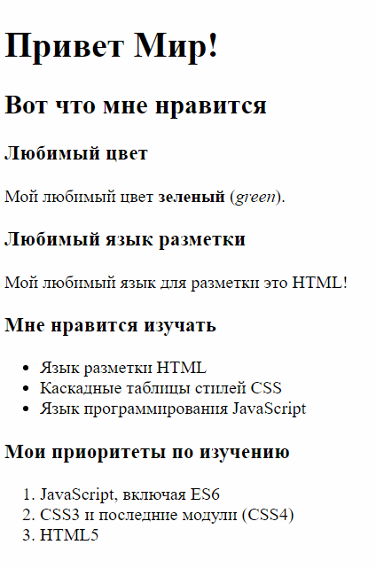

HTML (Hyper Text Markup Language) — это язык разметки для
описания веб-страниц.
HTML это не язык программирования, это язык разметки
или средство форматирования гипертекста.
Веб-страницы (гипертекстовые документы, HTML-документы) — это текстовые
файлы, размеченные тегами (tags) языка HTML.
Все страницы в Интернете написаны с помощью HTML. Любую существующую страницу любого сайта можно сохранить как обычный текстовый файл. HTML-файлы это просто текстовые файлы, поэтому чтобы создать такой файл можно использовать самый простой текстовый редактор.
Кратчайший путь к простейшей веб-странице:
Создать на "рабочем столе" текстовый файл, например с названием index.txt
Переименовать его в index.html
Открыть его в приложении блокнот (notepad) и напечатать: Привет Мир!, с новой строки напечатать "Мой любимый цвет " и ваш любимый цвет и затем сохранить файл. Простейшая веб-страница готова!
Например:
Привет Мир!
Мой любимый цвет зеленый.
Такая страница не является полноценной страницей согласно стандартам W3C, однако она полнофункциональна и может быть использована в любом браузере.
Для профессионального написания HTML-кода используются более продвинутые редакторы (WebStorm (платный), Sublime (платный), Brackets, Visual Studio Code, Atom и прочие, однако в некоторых случаях для быстрых правок достаточно использовать такой редактор как Notepad++.
HTML-файлы не нужно публиковать в Интернете чтобы их просмотреть.
Эти файлы можно открыть любым браузером (программой для просмотра веб-страниц) с локального диска, до размещения в Интернете.
Список самых распространенных браузеров:
Google Chrome — используется браузерный движок Webkit
Internet Explorer — используется браузерный движок Trident, Edge это последняя версия браузера от Microsoft — используется браузерный движок EdgeHTML, ответвление Microsoft Trident с удалением устаревшего кода и заменой его на более современный
Safari (сейчас поддерживается только версия под Mac) — используется браузерный движок Webkit
Понятия составлющие HTML это гипертекст (Hypertext) и разметка (markup).
Гипертекст
Гипертекст
это текст содержащий ссылки на другие тексты
Этот термин ввел Ted Nelson в 1965-м году, однако сам принцип использовался еще раньше с начала создания книг и письменных документов (Что такое Гипертекст ).
Примеры
Простейший пример гипертекста это энциклопедия, где статья имеет ссылки на другие статьи этой же энциклопедии. В результате читать такой текст можно по-разному: весь текст целиком, либо переходя по каждой ссылке открывая статью относящуюся к предыдущей.
Брем А. Жизнь животных / Альфред Брем. — М.: Эксмо, 2009. Стр. 354.
Другой пример это страница в книге где есть ее содержание, которое представляет собой список названий разделов книги с указанным номером страницы. Если нужно перейти к выбранному разделу, необходимо открыть нужную страницу:
Мураховский В. И., Симонович С. В. Большая книга цифровой фотографии. 2-е издание — СПб.: Питер, 2012. Стр. 3.
Так же в книгах встречаются отсылки к другим изданным книгам, это тот же прототип ссылок используемых во Всемирной паутине:
Мюллер В. К. Большой англо-русский словарь: В новой редакции: 210 000 слов, словсочетаний, идиоматических выражений, пословиц и поговорок. Изд. 5-е, стереотип. — М.: Цитадель-трейд: РИПОЛ КЛАССИК: Дом. XXI век, 2006. Стр. 7.
Такая же идея используется при подключении внешних компонентов веб-страниц, не являющихся непосредственной частью страницы.
В книгах используют цитаты, что согласуется с продолжением идеи ссылок на внешние ресурсы:
Институциональная архитектоника и динамика экономических преобразований / Под ред. д-ра экон. наук А. А. Гриценко. — Х.: Форт, 2008. Стр. 320.
Подобным образом внешние ссылки на другие источники в печатных изданиях использовали еще до появления Интернета.
Задание
Какие еще сторонние материалы используются в книгах помимо цитат и ссылок на другие издания?
Принципиально новое слово в практике использовании ссылок было сказано в 1991 году с изобретением сотрудником Европейской лаборатории физики элементарных частиц (CERN) Тимом Бернерсом-Ли идеологии World Wide Web, или Всемирной паутины — совокупности веб-страниц с различным, в том числе мультимедийным контентом и гиперссылками.
Отличие гиперссылки от обычного текста в том, что такая ссылка позволяет осуществить использование указанного ресурса. Наиболее распространенный вариант использования — гиперссылка в тексте, кликнув на которую вы можете перейти на другую страницу сайта.
Гиперссылка это фундаментальное свойство веб-страниц.
Подобным образом, указывая в определенном виде нужную ссылку, к веб-странице подключаются все необходимые ресурсы, включая стили, скрипты, изображения, видео.
Интернет и HTML
Интернет — это единая мировая сеть объединяющая компьютеры, которые постоянно обмениваются данными. Каждый компьютер в этой сети обладает уникальным номером, который называется IP адрес (например IP адрес: 62.210.86.40).
Доменное имя (адрес сайта) это уникальное имя придуманное для замены сложных цифр IP-адреса. Доменное имя сайта регистрируется в специальных службах, например ua.godaddy.com. Пример доменного имени: spalah.ua. Регистрация доменного имени является платной услугой и осуществляется на определенный период времени. У регистратора доменного имени хранится связь доменного имени с IP-адресом компьютера, на котором размещается сайт. Эта связь размещается на DNS-сервере (Domain Name Server).
Компьютер, на котором размещается сайт называется веб-сервер. При обращении к веб-серверу с помощью веб-браузера он выдает HTML-страницы. Услуга по хранению файлов сайта на веб-сервере так же являются платной и регистрируется на определенный период времени. Аренда веб-сервера для размещения сайтов в сети Интернет называется хостинг.
При открытии в браузере адреса, например google.com, в конечном итоге происходит запрос на IP-адрес, который ассоциирован с этим доменным именем, после чего в качестве ответа с веб-сервера приходит сгенерированная HTML-страница.
Адрес сайта также называют URL — Uniform Resource Locator.
Распространенные протоколы передачи данных
Перед доменным именем указывается протокол передачи гипертекста http либо https, например https://www.google.com.ua/.
HTTP (Hyper Text Transfer Protocol) — протокол передачи гипертекста. Протокол HTTP используется при пересылке веб-страниц.
HTTPS (Hyper Text Transfer Protocol Secure) — это тоже протокол для передачи гипертекста, с шифрование данных, для более безопасной передачи информации. Используется в интернет-магазинах. Обязательно проверяйте его наличие когда производите оплату через Интернет.
Для копирования файлов сайта со своего компьютера на веб-сервер и обратно, как правило используется протокол передачи файлов FTP (File Transfer Protocol).
Для работы с FTP рекомендуется программа Filezilla.
Типы сайтов по содержимому
По содержимому сайт может быть двух типов:
Статический — представляет собой набор статических файлов размещенных в специальной папке веб-сервера открытой для доступа извне. Весь сайт можно упаковать в архив и закинуть на флешку. Как правило он содержит HTML, CSS, JS файлы а так же файлы изображений и шрифтов.
Динамический — когда содержимое генерируется серверными скриптами написанными на серверных языках программирования: PHP, .Net, JAVA, Ruby. Информация в этом случаех хранится в базе данных, например MySQL, MSSQL, MongoDB, а серверные скрипты и прочие файлы так же как и в статическом сайте в определенной папке. В динамическом сайте так же могут быть статические файлы: CSS, JS, изображения и шрифты использованные в дизайне.
Задание
Какие существуют типы сайтов помимо динамических и статических?
Разметка (markup)
Структуру HTML документа задают теги которыми делается разметка информации и которые придают контенту смысл.
Язык разметки это набор тегов которые используются для разметки различного
содержания документа (заголовки, подзаголовки, параграфы, ссылки, изображения, формы для ввода
информации, аудио, видео, JavaScript-код).
Теги
Тег — это обозначение элемента в HTML.
Существуют открывающие, закрывающие и одиночные теги.
Откройте обновленную страницу в браузере, для обновления нажмите 'F5'.
Внешний вид страницы не изменился, однако целью HTML является добавление смысла, а не воздействие на внешний вид. В этом примере были добавлены основные базовые элементы веб-страницы:
Первая строка: <!doctype html> — это объявление типа документа (document type), в данном случае объявлен HTML5. Это объявление очень важно, иначе браузер будет предпологать что тип документа неизвестен и после этого будет работать с ним по своему усмотрению (добавит непредсказуемые проблемы).
<html> — открывающий тег говорящий браузеру что все, что находится между ним и закрывающим тегом</html> является HTML-документом.
Все находящееся между открывающим тегом <body> и закрывающим тегом </body> будет отображаться в окне браузера, и является основным контентом веб-страницы.
Синтаксис обычных тегов:<тег> контент </тег> <tag> content </tag>
Не у всех тегов есть закрывающий тег. Тег без закрывающего тега называется одиночный или само-закрывающийся. Это теги, такие как <br /> — перевод строки и <hr /> — тематический разделитель между параграфами (в предыдущей версии horizontal ruler — горизонтальный разделитель), а так же ряд других тегов.
Синтаксис одиночных тегов:<тег /> <tag />
Атрибуты
Теги так же могут содержать атрибуты, которые содержат дополнительную информацию.
Атрибуты задаются внутри открывающего тега. Значения атрибутов заключаются в кавычки.
Заключение значений в кавычки не всегда важно, но лучшей практикой является постоянное использование кавычек.
Элементы
Теги обозначают начало и конец элемента веб-страниц.
Элементы это составляющие веб-страницы.
Например то, что находится между тегами <body> и </body>, а так же сам тег это элемент body, т.е. тело документа.
Еще пример — в то время как <title> и </title> это теги, <title>Заголовок страницы</title> это элемент title.
Базовые понятия HTML
В открывающиеся и закрывающиеся теги можно вкладывать другие теги. Вложенность тегов наиболее наглядно представлена древовидной структурой.
Находя теги в коде HTML-страницы, браузер строит древовидную структуру элементов веб-страницы которую называют DOM (Document Object Model).
После формирования этой структуры, браузер начинает отображать веб-страницу пользователю.
Заголовок
Любая веб-страница или HTML-документ должна иметь заголовок
Чтобы добавить заголовок к нашей простейшей веб-странице необходимо добавить два новых элемента:
Элемент head
Элемент title
Давайте допишем код нашей первой веб-страницы:
<!doctype html>
<html>
<head>
<title>Моя первая веб-страница</title>
</head>
<body>
Привет Мир!
Мой любимый цвет зеленый.
</body>
</html>
Обновите страницу в браузере и обратите внимание на то что вкладка браузера теперь содержит название: "Моя первая веб-страница".
Теперь если попытаться сохранить документ из браузера на рабочий стол либо в любую другую папку, вы увидите что в качестве названия веб-страницы используется значение элемента title!
Этот же заголовок используется когда вы добавляете в избранные закладки эту страницу:
Элемент head
Элемент head всегда размещается перед элементом body (перед открывающим тегом <body> и содержит информацию о странице.
Он может содержать не только тег title, но и много других тегов.
Этот элемент начинается с открывающего тега <head> и заканчивается закрывающим тегом </head>
Синтаксис:<head>
информация_о_странице </head>
Элемент title
Элемент title всегда размещается внутри элемента head (между открывающим тегом <head> и закрывающим тегом </head> и содержит заголовок страницы.
Синтаксис:<title>название_страницы</title>
Параграф (абзац)
Теперь когда у нас есть базовая структура HTML документа, можно больше поработать с содержанием страницы.
Вот наш код:
<!doctype html>
<html>
<head>
<title>Моя первая веб-страница</title>
</head>
<body>
Привет Мир!Мой любимый цвет зеленый.
</body>
</html>
Однако не смотря на то что у нас есть две строчки в браузере весь текст нашей страницы выводится в одну строчку:
Оказывается браузер игнорирует пробелы и переводы строк. Давайте добавим пробелов между любыми словами:
<!doctype html>
<html>
<head>
<title>Моя первая веб-страница</title>
</head>
<body>
Привет Мир!Мой любимый цвет зеленый.
</body>
</html>
Результат в браузере выглядит точно так же как и до добавления пробелов!
Но ведь мы хотим верстать HTML-страницы так чтобы это выглядело не хуже чем в книгах и нам нужны абзацы!
Брем А. Жизнь животных / Альфред Брем. — М.: Эксмо, 2009. Стр. 57.
Элемент p
Элемент p служит для разделения текста на блоки — в терминологии HTML параграфы, на русском это абзацы. Помните что HTML относится к разметке структуры, а не к внешнему виду.
Давайте обновим наш код:
<!doctype html>
<html>
<head>
<title>Моя первая веб-страница</title>
</head>
<body>
<p>Привет Мир!</p><p>Мой любимый цвет зеленый.</p>
</body>
</html>
После обновления страницы в браузере, внешний вид меняется:
Теперь текст разделен на две строки, потому что браузер разделил его на отдельные абзацы (параграфы в терминологии HTML).
Акцент
В печатных изданиях так же используется выделение отдельных слов для усиление их значимости:
Брем А. Жизнь животных / Альфред Брем. — М.: Эксмо, 2009. Стр. 57.
Для акцентирования внимания в тексте используются:
Строчный элемент strong: <strong>сильно_значимый_текст</strong> — сильно значимый текст
Строчный элемент em: <em>текст_для_акцентирования_внимания</em> — придание тексту акцента
По умолчанию браузер сделает текст обозначенный с помощью <em>курсивом (italic в Microsoft World), а с помощью <strong> — жирным начертанием (bold в Microsoft Word), однако эти характеристики можно изменить используя CSS.
Добавим акцентирование или усиление важности фрагментов текста:
<!doctype html>
<html>
<head>
<title>Моя первая веб-страница</title>
</head>
<body>
<p>Привет Мир!</p>
<p>Мой любимый цвет <strong>зеленый</strong> (<em>green</em>).</p>
</body>
</html>
Результат должен выглядеть так:
Заголовки
Планета чудес и загадок. Перевод с английского Strange Worlds Amazing Places — Отпечатано в Германии.: ЗАО «Издательский Дом Ридерз Дайджест», 2006. Стр. 398.
В документах или книге можно встретить заголовки и подзаголовки различных видов. Для создания заголовков и различных подзаголовков в HTML есть специальные теги.
Эти теги: h1, h2, h3, h4, h5, h6 — от самого главного (h1) к наименее значительному (h6).
Добавим заголовок и подзаголовки к нашему примеру. Заменим первый абзац на заголовок первого уровня и добавим дополнительные подзаголовки и еще один абзац:
<!doctype html>
<html>
<head>
<title>Моя первая веб-страница</title>
</head>
<body>
<h1>Привет Мир!</h1><h2>Вот что мне нравится</h2><h3>Любимый цвет</h3>
<p>Мой любимый цвет <strong>зеленый</strong> (<em>green</em>).</p>
<h3>Любимый язык разметки</h3><p>Мой любимый язык для разметки это HTML!</p>
</body>
</html>
Результат который должен получиться:
Браузер уже применил к заголовкам стили по умолчанию, поэтому они отличаются от текста в абзацах (изменился размер букв и рассотяние между строками). В дальнейшем эти стили можно будет изменить.
Особенность
Основной заголовок h1 должен указываться на странице либо внутри семантического тега обозначающего статью один раз. Подзаговолков (h2-h6) может быть несколько.
В веб-документе должна сохраняться иерархия заголовков — первым идёт h1 за ним h2, за h2 идёт h3 и т.д.
Следующий h2 может идти за h3, но не стоит ставить первый h3 перед h2.
Заголовки и подзаголовки влияют на ранжирование (рейтинг) в поисковых системах, поэтому стоит уделять внимание правильной иерархии заголовков и подзаголовков.
Списки
Список это последовательное перечисление элементов. В HTML существует три типа списков:
неупорядоченный список (unordered list — самый распространённый вид списков. Для обозначения этого типа списка используется тег ul
упорядоченный список (ordered list) — используется при перечислении пунктов где необходима нумерация. Для обозначения используется тег ol.
список определений (definition list) — менее распространенный, но довольно удобный вид списков, обозначаемый тегом dl
Внутренние элементы списков ul и ol обозначаются тегом li (list item — элемент списка).
Каждый внутренний элемент списка может содержать в себе список в котором в свою очередь есть элементы списка. Таким образом можно формировать вложенные структуры, которые могут использоваться например в картах сайта.
Подобным образом делается и навигационное меню с разным уровнем вложенности.
Элемент ul
Планета чудес и загадок. Перевод с английского Strange Worlds Amazing Places — Отпечатано в Германии.: ЗАО «Издательский Дом Ридерз Дайджест», 2006. Стр. 7.
Планета чудес и загадок. Перевод с английского Strange Worlds Amazing Places — Отпечатано в Германии.: ЗАО «Издательский Дом Ридерз Дайджест», 2006. Стр. 10.
Пример упорядоченного списка (с номерами):
Синтаксис используется такой же как и для ul:<ol> <li>первый_элемент_списка</li> <li>второй_элемент_списка</li> <li>третий_элемент_списка</li> </ol>
Элемент dl похож на ul и ol, тем что содержит в себе элементы списка. Исключением является то, что вместо одного внутреннего элемента
li используется пара элементов:
Брем А. Жизнь животных / Альфред Брем. — М.: Эксмо, 2009. Стр. 959.
<!doctype html>
<html>
<head>
<title>Моя первая веб-страница</title>
</head>
<body>
<h1>Привет Мир!</h1>
<h2>Вот что мне нравится</h2>
<h3>Любимый цвет</h3>
<p>Мой любимый цвет <strong>зеленый</strong> (<em>green</em>).</p>
<h3>Любимый язык разметки</h3>
<p>Мой любимый язык для разметки это HTML!</p>
<h3>Мне нравится изучать</h3>
<ul>
<li>Язык разметки HTML</li>
<li>Каскадные таблицы стилей CSS</li>
<li>Язык программирования JavaScript</li>
</ul>
</body>
</html>
Задание
В конце страницы Необходимо добавить заголовок "Мои приоритеты по изучению".
После заголовка добавить упорядоченный (нумерованный) список, где будет указана личная приоритетность изучения этих технологий.
Результат должен выглядеть примерно так:

Ссылки
До этого момента мы создавали отдельную веб-страницу со своей структурой, однако Интернет отличается именно тем, что объединяет собой все ссылки.
В термине HTML две первые буквы H и T (Hyper Text) обозначают Гипер Текст, что по сути представляет собой систему со ссылками в тексте.
Давайте разместим на нашей веб-странице свою первую ссылку. Мы можем сделать любой из элементов ссылкой. Давайте сделаем ссылкой на адрес https://www.w3.org/html/ текст "Язык разметки HTML":
<!doctype html>
<html>
<head>
<title>Моя первая веб-страница</title>
</head>
<body>
<h1>Привет Мир!</h1>
<h2>Вот что мне нравится</h2>
<h3>Любимый цвет</h3>
<p>Мой любимый цвет <strong>зеленый</strong> (<em>green</em>).</p>
<h3>Любимый язык разметки</h3>
<p>Мой любимый язык для разметки это HTML!</p>
<h3>Мне нравится изучать</h3>
<ul>
<li><a href="https://www.w3.org/html/">Язык разметки HTML</a></li>
<li>Каскадные таблицы стилей CSS</li>
<li>Язык программирования JavaScript</li>
</ul>
<h3>Мои приоритеты по изучению</h3>
<ul>
<li>JavaScript</li>
<li>CSS3</li>
<li>HTML5</li>
</ul>
</body>
</html>
Направление ссылки задается в значении атрибута href. Это может быть абсолютная ссылка (в формате "http://google.com"):
<a href="http://google.com">абсолютная ссылка на Google</a>
либо относительная (когда приводится не полный URL а его часть, при этом открывается адрес относительно нашей страницы).
К примеру, если у нас есть вторая страница "web-page-2.html", которая находится в той же папке, что и наша основная страница, то добавление ссылки на вторую страницу будет выглядеть так:
<a href="web-page-2.html">относительная ссылка на вторую страницу</a>
Ссылка так же может отправлять пользователя к указанной части веб-страницы (якорю) на которой он находится. При добавлении атрибута id к любому тегу, например: <h3 id="priorities">Мои приоритеты по изучению</h3>
можно добавить ссылку на этот подзаголовок: <a href="#priorities">перейти к приоритетам изучения</a>
Давайте добавим якорь и ссылку к нашей странице:
<!doctype html>
<html>
<head>
<title>Моя первая веб-страница</title>
</head>
<body>
<h1>Привет Мир!</h1>
<h2>Вот что мне нравится</h2>
<ul>
<li><a href="#priorities">переход к приоритетам изучения</a></li>
</ul>
<h3>Любимый цвет</h3>
<p>Мой любимый цвет <strong>зеленый</strong> (<em>green</em>).</p>
<h3>Любимый язык разметки</h3>
<p>Мой любимый язык для разметки это HTML!</p>
<h3>Мне нравится изучать</h3>
<ul>
<li><a href="https://www.w3.org/html/">Язык разметки HTML</a></li>
<li>Каскадные таблицы стилей CSS</li>
<li>Язык программирования JavaScript</li>
</ul>
<h3 id="priorities">Мои приоритеты по изучению</h3>
<ul>
<li>JavaScript</li>
<li>CSS3</li>
<li>HTML5</li>
</ul>
</body>
</html>
Если обновить страницу и уменьшить окно экрана как показано ниже:
То после клика на ссылку переход к приоритетам изучения браузер прокрутит документ к заголовку, так чтобы он был виден, так же обновится URL в браузере — добавится хэш #priorities.
Изображения
Текст даже с форматированием но без всяких изображений выглядит довольно скучно, поэтому просто необходимо разбавить его мульти-медиа вкраплениями.
Для добавления изображений используется элемент img с атрибутами где указаны:
Источник — src (source) обязательный атрибут, указывается путь к изображению
Описание — alt (alternate text) обязательный атрибут, задается текст, описывающий изображение
Ширина — width, задается в пикселях или процентах
Высота — height, задается в пикселях или процентах
HTML код для добавления изображения с абсолютным путём к изображению выглядит так:
Атрибут src говорит браузеру где находится изображение. Как и в теге a, путь может быть абсолютным и относительным. Если сохранить изображение рядом с html документом, к нему можно обращаться так:
Размеры изображений необходимо указывать чтобы браузер резервировал место под изображение еще до того как оно загрузится. Если не указывать размеры то контент на странице будет "прыгать" после того как браузер после загрузки изображения сможет просчитать размер и перерисовать страницу.
Атрибут alt
alt необходим для задания альтернативного описания. Этот атрибут обеспечивает доступность контента для пользователей которые не могут видеть изображение (например слепые, в этом случае специальный браузер прочитает это описание).
Форматы изображений поддерживаемых браузерами
Наиболее поддерживаемые форматы изображений для веб:
JPG (произносится как "jay-peg") — растровые изображения без поддержки полупрозрачности. Поддерживатся сжатие, при большем сжатии ухудшается качество. (Основная масса цифровых устройств делает фото-снимки в этом формате: фото-аппараты, смартфоны, планшеты)
PNG (произносится "ping") — растровые изображения с поддержкой полупрозрачности. Поддерживает палитру из 16 миллионов цветов.
SVG (произносится "as-vi-ji") — векторное изображение не теряющее качество при масштабировании (представляет собой текстовый XML-файл).
GIF (произносится как “jif”) — растровые изображения с поддержкой пикселей с полной прозрачностью. Поддерживает палитру из 256 цветов. Может содержать покадровую анимацию.
CSS
CSS — Cascading Style Sheets (каскадные таблицы стилей) это язык описания внешнего вида документа, написанного с использованием языка разметки.
В основном CSS используется для задания внешнего вида веб-страниц, но так же может применяться к любым XML-документам, таким как SVG или XUL.
CSS это список стилей, применяемых к тегам и влияющий на то как будет отображаться контент.
Целью разработки CSS было отделение внешнего вида (CSS) от логической структуры (то что задает HTML). Такое разделение внешнего вида и логической структуры дало:
большую доступность документа
большую гибкость
возможность управления внешним видом
уменьшение сложности в поддержке веб-страниц
Применение CSS к документам HTML основано на принципах наследования и каскадирования:
Принцип наследования заключается в том, что свойства CSS, объявленные для родительских элементов, наследуются дочерними элементами.
Принцип каскадирования используется, когда HTML элементу одновременно поставлено в соответствие более одного правила CSS (существуют правила приоритета применения стилей).
Для одного и того же документа можно использовать разные стили:
Задавать отдельные стили для печати (где будет скрыт header footer и другие вспомогательные части сайта).
Создавать темы — одна и та же веб-страница выглядеть по разному, можно перекрашивать и в некоторых случаях полностью менять дизайн одного и того же документа (CSS Garden).
Подключать один и тот же CSS ко всем страница сайта либо страницам раздела, чтобы они выглядели в одном стиле.
CSS, если стили вынесены в отдельный файл, как и HTML, представляет собой обычный текстовый документ.
Подключение CSS
Существует три способа применения CSS к HTML, когда стили:
Строчные
Внутренние
Внешние
Строчные (inline)
Строчные стили можно задавать в значении атрибута style:
<p style="color: red;">красный текст</p>
Добавление этого атрибута со стилем сделает текст конкретного параграфа красным.
Но, так как мы знаем что лучшей практикой является отделения разметки от внешнего вида, то необходимо избегать использования этого варианта.
Внутренние (internal)
Внедряемые, или внутренние (глобальные) стили используются для всей страницы. Внутри элемента head добавляется парный тег style, содержащий внутри себя все стили веб-страницы.
Вернёмся к нашей странице и добавим стили:
<!doctype html>
<html>
<head>
<title>Моя первая веб-страница</title>
<style>
p {
color: green;
}
a {
color: maroon;
}
</style>
</head>
...
Добавленные стили сделают текст параграфов зеленым и раскрасят все ссылки в бардовый.
Этот способ подключения так же рекомендуется использовать в редких случаях, предпочитая выносить стили в отдельный внешний файл.
Внешние (external)
Внешние стили используются для всего многостраничного сайта. В случае когда используются внешние стили, они выносятся в отдельный текстовый CSS файл (например styles.css), содержимое которого может выглядеть так:
p {
color: green;
}
a {
color: maroon;
}
Если style.css находится в той же директории что и HTML-документ, к которому мы хотим применить стили, то добавление ссылки на этот файл в HTML будет выглядеть так:
Необходимо перенести внутренние стили во внешний файл и добавить их к нашей странице.
Замените цвета на противоположные. Чтобы увидеть изменения надо сохранить CSS файл и обновить HTML-страницу в браузере (нажать F5 или Ctrl+F5).
Селекторы, свойства и значения
В HTML есть теги, в CSS есть селекторы. Селекторы это имена данные стилям во внутренних либо внешних таблицах стилей.
Каждое правило задающее стиль состоит из двух частей:
Селектор — определяет к чему мы применяем стиль
Список CSS-свойств и их значений — какие свойства мы задаем к элементу выбранному селектором
Несколько селекторов перечисляются через запятую. Свойсто отделяется от значения двоеточием. Несколько пар свойство-значение разделяются точкой с запятой.
Для начала мы рассмотрим HTML селекторы, которые являются названиями HTML тегов и используются для глобального изменения стилей выбранного типа элемента.
body {
color: navy;
font-size: 16px;
}
Эти стили применят заданные значения свойств color и font-size к селектору body — текст станет синим и его размер будет равен 16-ти пикселам. Селектор body соответствует HTML элементу body, внутри которого находятся все элементы которые отображаются в браузере.
Эти стили будут влиять на все элементы вложенные в тег body, кроме тех для которых заданы другие значения этих же свойств (color, font-size).
Задание
Добавить приведенные выше стили для селектора body к уже заданным стилям в файле styles.css.
После применения глобальных стилей к селектору body, веб-страница преобразится:
Стоит отметить, что даже если заданы размеры шрифта и цвет для самого родительского элемента, размер текста в заголовках остался отличным от размера текста в параграфах, кроме того сохранился прежний цвет ссылок и параграфов.
У каждого браузера есть стили по умолчанию для каждого HTML-элемента, именно поэтому если сделать HTML-разметку, можно заметить что заголовки, параграфы, списки, ссылки обладают заданным цветом, размером шрифта и отступами. Для заголовков задан размер в относительных единицах зависящих от размера шрифта родительского элемента. Поэтому если задать font-size еще больше, например 20px, сохранить CSS файл и обновить страницу, можно увидеть, что заголовки так же увеличатся.
Размеры
Чем можно задавать размеры в CSS:
px — пикселях (это минимальная точка на любом экране)
% — процентах (в большинстве случаев относительно родительского элемента, но зависит от контекста)
em — типографических единицах (рассчитывается относительно размера шрифта родительского элемента, например, если font-size в документе 12px, 1em равен 12px.)
rem — (root em) типографических единицах (рассчитывается так же как em но относительно корневого элемента html что удобно при масштабировании всего сайта)
vw, vh, vmin, vmax — относительных единицах (рассчитываются относительно размера экрана), эти значения были созданы для поддержки мобильных устройств
Устаревшие единицы, вместо которых можно использовать пиксели:
1mm (мм) = 3.8px
1cm (см) = 38px
1pt (типографический пункт) = 4/3px
1pc (типографическая пика) = 16px
Если размером является 0, размерную единицу можно не указывать:
border: 0;
Современные браузеры могут хорошо масштабировать элементы веб-страниц даже если их размеры заданы в пикселах.
Цвета
В CSS можно задавать 16 миллионов цветов.
Цвет можно задавать:
в формате RGB (Red Green B — красный зеленый синий), например rgb(255, 255, 255) - белый.
названием цвета, например: aqua, black, blue, fuchsia, gray, green, lime, maroon, navy, olive, transparent
в 16-ричном коде HEX (Hexadecimal - шеснадцатиричный) (в этом случае можно использовать сокращенную запись), например #ffffff тоже что и #fff - белый
форматом из CSS3 HSL (Hue Saturation Lightness mdash; оттенок насыщенность светлость), например hsl(360, 100%, 100%).
цвет с полупрозрачность в формате RGBA - тоже что и RGB + Alpha — обозначает полупрозрачность, 0 - полностью прозрачный цвет, 1 - полностью непрозрачный цвет, 0.5 - наполовину прозрачный, например rgba(255, 255, 255, 0.5).
цвет с полупрозрачность в форматe HSLA - тоже что и HSL + Alpha — обозначает полупрозрачность, например hsla(360, 100%, 100%, 0.9).
Таким образом красный цвет можно задать следующими значениями в CSS:
red
rgb(255,0,0)
rgb(100%,0%,0%)
#ff0000
#f00
RGB формат
В RGB формате значения задаются от 0 до 255. Если первой цифрой идет 0 (минимальный уровень) значит в цвете нет красного, если 255 то это сто-процентное значение красного. Для зелёного и синего такой же диапазон значений — 0-255.
HEX формат
В 16-ричном формате так же задается число в диапазоне от 0 до f: 0, 1, 2, 3, 4, 5, 6, 7, 8, 9, a, b, c, d, e, f,
задающее уровень красного зелёного и синего оттенков.
В CSS перед 16-ричным числом ставится хеш-символ #, а затем идут 3 или 6 чисел: #f00 или #ff0000 — сокращение возможно потому что две подряд цифры в каждой паре совпадают.
Цвет текста и цвет фона
Цвет текста можно задать используя свойство color, цвет фона с помощью background-color.
Свойства color и background-color можно применять к большинству HTML элементов, включая элемент body.
Задание
Давайте поменяем фоновый цвет всей нашей веб-страницы, добавив для селектора body свойство background-color: background-color: lavenderblush;.
Текст
В CSS есть возможность изменения размера и формы текста с помощью свойств относящихся к веб-типографике:
Шрифт
font-size — размер шрифта, кегль.
line-height — высота строки, расстояние между строками.
font-weight — насыщенность шрифта.
font-family — семейство шрифта, гарнитура, шрифт.
font-style — стиль шрифта.
Текст
text-align — выравнивание текста.
text-decoration — оформление текста.
text-transform — изменение текста.
Отступы
letter-spacing — расстояние между буквами.
word-spacing — расстояние между словами.
text-indent — отступ слева в первой строке параграфа.
CSS-свойства относящиеся к шрифту
font-size
font-size — задаёт размер шрифта. Следует осторожно задавать этот размер, к примеру, размер текста в параграфах не должен быть больше размера заголовков и подзаголовков. Наиболее часто для задания размера шрифта используются px, em, rem.
line-height — задаёт высоту строки элемента без имзенения размера шрифта. Рекомендуется задавать это значение числом без размерных единиц, например line-height: 2 задаст высоту строки равную двум размерам шрифта. Так же можно задавать значение normal, которое задается по умолчанию.
Если задать line-height в пикселах px, то при изменении размера шрифта, нужно будет пересчитывать это значение, иначе может произойти неприятный момент:
font-weight — задает жирность текста. Наиболее часто используется font-weight: bold — для задания жирного шрифта (тоже самое 700), и normal — для задания нежирного текста (тоже самое 400). Другие значения поддерживаются не всеми шрифтами: bolder — еще более жирный, lighter — более тонкий шрифт, 100, 200, 300, 500, 600, 800, 900.
Задаёт шрифт, например "Times New Roman", "Arial" или "Verdana".
Браузер использует шрифт который установлен на компьютере пользователя. Существует список "безопасных" шрифтов (Aria, Verdana, Times New Roman — это шрифты которые установлены практически на любых компьютерах.
Можно задавать через запятую несколько шрифтов, тогда браузер будет использовать первый если найдёт его на компьютере, если не найдёт первый будет использовать второй и так до последнего варианта. Поэтому самый распространенный вариант, когда указывается минимум три шрифта: font-family: arial, helvetica, sans-serif — что соответствет шрифтам Arial, Helvetica, а так же если не найдены предыдущие два любой шрифт без засечек sans-serif.
Типы шрифтов
В основном шрифты можно разделить на:
serif — шрифт с засечками (Times New Roman, Times, Georgia и другие)
sans-serif — шрифт без засечек (Arial, Verdana, Helvetica, Tahoma и другие)
Если название шрифта состоит из нескольких слов, это название заключается в кавычки: font-family: "Times New Roman", Times, serif;
letter-spacing — задаёт расстояние между буквами, по умолчанию это значение равно нулю. Это расстояние можно задавать в любых размерных единицах CSS.
Для сброса предыдущих значений, используется normal.
word-spacing
word-spacing — задаёт расстояние между словами, по умолчанию это значение равно нулю. Это расстояние можно задавать в любых размерных единицах CSS.
Для сброса предыдущих значений, используется normal.
text-indent
text-indent — задаёт отступ слева для первой строки текста, по умолчанию это значение равно нулю. Этот отступ можно задавать в любых размерных единицах CSS. Для сброса предыдущих значений, используется 0.